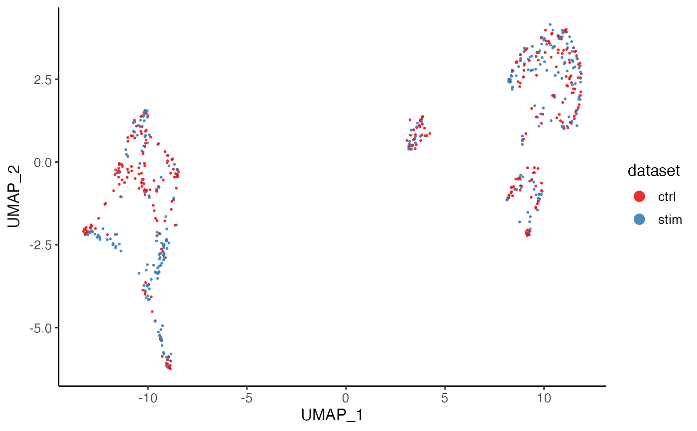
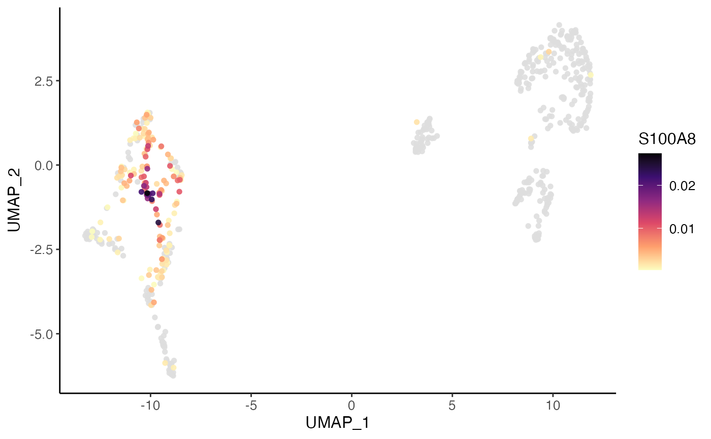
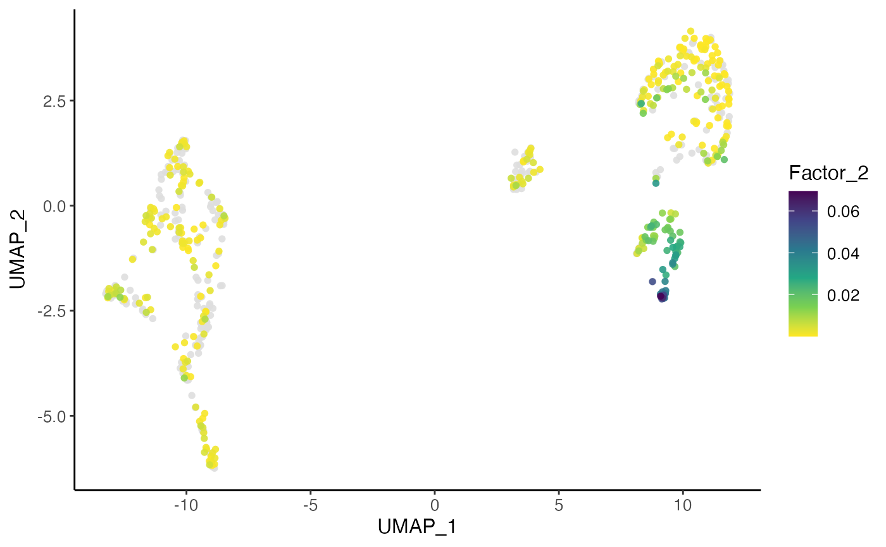
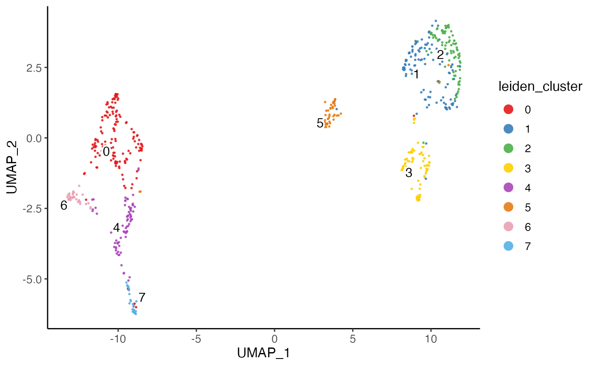
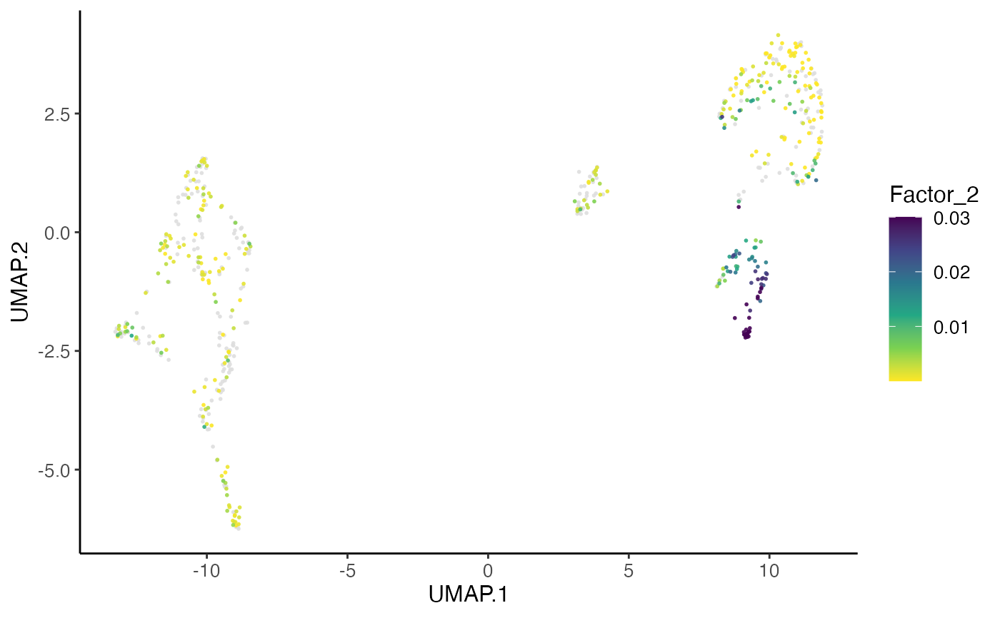
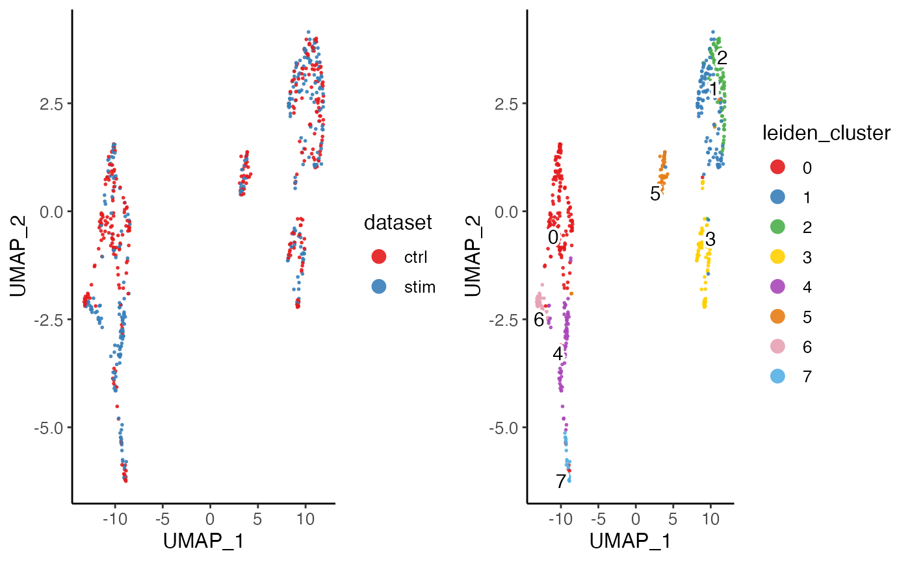
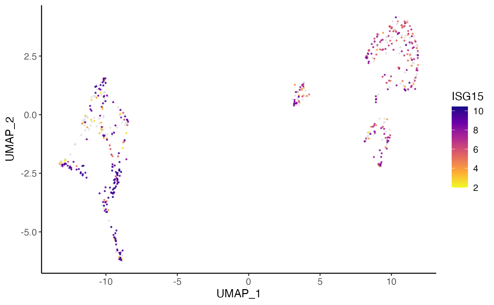

This function allows for using available cell metadata to build
the x-/y-axis. Available per-cell data can be used to form the color/shape
annotation, including cell metadata, raw or processed gene expression, and
unnormalized or aligned factor loading. Multiple coloring variable is allowed
from the same specification of slot, and this returns a list of plots
with different coloring values. Users can further split the plot(s) by
grouping on cells (e.g. datasets).
Usage
plotDimRed(
object,
colorBy = NULL,
useDimRed = NULL,
slot = c("cellMeta", "rawData", "normData", "scaleData", "H.norm", "H", "normPeak",
"rawPeak"),
colorByFunc = NULL,
cellIdx = NULL,
splitBy = NULL,
shapeBy = NULL,
titles = NULL,
...
)
plotClusterDimRed(object, useCluster = NULL, useDimRed = NULL, ...)
plotDatasetDimRed(object, useDimRed = NULL, ...)
plotByDatasetAndCluster(
object,
useDimRed = NULL,
useCluster = NULL,
combinePlots = TRUE,
...
)
plotGeneDimRed(
object,
features,
useDimRed = NULL,
log = TRUE,
scaleFactor = 10000,
zeroAsNA = TRUE,
colorPalette = "C",
...
)
plotPeakDimRed(
object,
features,
useDimRed = NULL,
log = TRUE,
scaleFactor = 10000,
zeroAsNA = TRUE,
colorPalette = "C",
...
)
plotFactorDimRed(
object,
factors,
useDimRed = NULL,
trimHigh = 0.03,
zeroAsNA = TRUE,
colorPalette = "D",
...
)Arguments
- object
A liger object.
- colorBy
Available variable name in specified
slotto look for color annotation information. See details. DefaultNULLgenerates all-black dots.- useDimRed
Name of the variable storing dimensionality reduction result in the
cellMeta(object). DefaultNULLuse default dimRed.- slot
Choose the slot to find the
colorByvariable. See details. Default"cellMeta".- colorByFunc
Default
NULL. A function object that expects a vector/factor/data.frame retrieved bycolorByas the only input, and returns an object of the same size, so that the all color "aes" are replaced by this output. Useful when, for example, users need to scale the gene expression shown on plot.- cellIdx
Character, logical or numeric index that can subscribe cells. Missing or
NULLfor all cells.- splitBy
Character vector of categorical variable names in
cellMetaslot. Split all cells by groupings on this/these variable(s) to produce a scatter plot containing only the cells in each group. DefaultNULL.- shapeBy
Available variable name in
cellMetaslot to look for categorical annotation to be reflected by dot shapes. DefaultNULL.- titles
Title text. A character scalar or a character vector with as many elements as multiple plots are supposed to be generated. Default
NULL.- ...
Arguments passed on to
.ggScatter,.ggplotLigerThemedotOrderControls the order that each dot is added to the plot. Choose from
"shuffle","ascending", or"descending". Default"shuffle", useful when coloring by categories that overlaps (e.g. "dataset"),"ascending"can be useful when coloring by a continuous variable (e.g. gene expression) where high values needs more highlight.NULLuse default order.dotSize,dotAlphaNumeric, controls the size or transparency of all dots. Default
getOption("ligerDotSize")(1) and0.9.trimHigh,trimLowNumeric, limit the largest or smallest value of continuous
colorByvariable. DefaultNULL.rasterLogical, whether to rasterize the plot. Default
NULLautomatically rasterize the plot when number of total dots to be plotted exceeds 100,000.labelByA variable name available in
plotDF. If the variable is categorical (a factor), the label position will be the median coordinates of all dots within the same group. Unique labeling in character vector for each dot is also acceptable. DefaultcolorBy.labelTextLogical, whether to show text label at the median position of each categorical group specified by
colorBy. DefaultTRUE. Does not work when continuous coloring is specified.labelTextSizeNumeric, controls the size of label size when
labelText = TRUE. Default4.seedRandom seed for reproducibility. Default
1.title,subtitle,xlab,ylabMain title, subtitle or X/Y axis title text. By default, no main title or subtitle will be set, and X/Y axis title will be the names of variables used for plotting. Use
NULLto hide elements.TRUEforxlaborylabshows default values.legendColorTitleLegend title text for color aesthetics, often used for categorical or continuous coloring of dots. Default
NULLshows the original variable name.legendShapeTitleLegend title text for shape aesthetics, often used for shaping dots by categorical variable. Default
NULLshows the original variable name.showLegendWhether to show the legend. Default
TRUE.legendPositionText indicating where to place the legend. Choose from
"top","bottom","left"or"right". Default"right".baseSizeOne-parameter control of all text sizes. Individual text element sizes can be controlled by other size arguments. "Title" sizes are 2 points larger than "text" sizes when being controlled by this.
titleSize,xTitleSize,yTitleSize,legendTitleSizeSize of main title, axis titles and legend title. Default
NULLcontrols bybaseSize + 2.subtitleSize,xTextSize,yTextSize,legendTextSizeSize of subtitle text, axis texts and legend text. Default
NULLcontrols bybaseSize.legendDotSizeAllow dots in legend region to be large enough to see the colors/shapes clearly. Default
4.panelBorderWhether to show rectangle border of the panel instead of using ggplot classic bottom and left axis lines. Default
FALSE.colorLabelsCharacter vector for modifying category names in a color legend. Passed to
ggplot2::scale_color_manual(labels). DefaultNULLuses original levels of the factor.colorValuesCharacter vector of colors for modifying category colors in a color legend. Passed to
ggplot2::scale_color_manual(values). DefaultNULLuses internal selected palette when <= 26 categories are presented, otherwise ggplot hues.legendNRow,legendNColInteger, when too many categories in one variable, arranges number of rows or columns. Default
NULL, automatically split toceiling(levels(variable)/10)columns.colorDirectionChoose
1or-1. Applied whencolorPaletteis from Viridis options. Default-1use darker color for higher value, while1reverses this direction.colorLow,colorMid,colorHigh,colorMidPointAll four of these must be specified to customize palette with
naColorThe color code for
NAvalues. Default"#DEDEDE".scale_colour_gradient2. DefaultNULL.plotlyWhether to use plotly to enable web based interactive browsing for the plot. Requires installation of package "plotly". Default
FALSE.
- useCluster
Name of variable in
cellMeta(object). DefaultNULLuses default cluster.- combinePlots
Logical, whether to utilize
plot_gridto combine multiple plots into one. DefaultTRUEreturns combined ggplot.FALSEreturns a list of ggplot.- features, factors
Name of genes or index of factors that need to be visualized.
- log
Logical. Whether to log transform the normalized expression of genes. Default
TRUE.- scaleFactor
Number to be multiplied with the normalized expression of genes before log transformation. Default
1e4.NULLfor not scaling.- zeroAsNA
Logical, whether to swap all zero values to
NAsonaColorwill be used to represent non-expressing features. DefaultTRUE.- colorPalette
Name of viridis palette. See
viridisfor options. Default"C"("plasma") for gene expression and"D"("viridis") for factor loading.- trimHigh
Number for highest cut-off to limit the outliers. Factor loading above this value will all be trimmed to this value. Default
0.03.
Value
A ggplot object when a single plot is intended. A list of ggplot
objects, when multiple colorBy variables and/or splitBy are
set. When plotly = TRUE, all ggplot objects become plotly (htmlwidget)
objects.
ggplot object when only one feature (e.g. cluster variable, gene, factor) is set. List object when multiple of those are specified.
Details
Available option for slot include: "cellMeta",
"rawData", "normData", "scaleData", "H.norm"
and "H". When "rawData", "normData" or
"scaleData", colorBy has to be a character vector of feature
names. When "H.norm" or "H", colorBy can be any valid
index to select one factor of interests. Note that character index follows
"Factor_[k]" format, with replacing [k] with an integer.
When "cellMeta", colorBy has to be an available column name in
the table. Note that, for colorBy as well as x, y,
shapeBy and splitBy, since a matrix object is feasible in
cellMeta table, using a column (e.g. named as "column1" in a
certain matrix (e.g. named as "matrixVar") should follow the syntax of
"matrixVar.column1". When the matrix does not have a "colname"
attribute, the subscription goes with "matrixVar.V1",
"matrixVar.V2" and etc. Use "UMAP.1", "UMAP.2",
"TSNE.1" or "TSNE.2" for the 2D embeddings generated with
rliger package. These are based on the nature of as.data.frame method
on a DataFrame object.
Examples
plotDimRed(pbmcPlot, colorBy = "dataset", slot = "cellMeta",
labelText = FALSE)
#> ℹ Plotting feature "dataset" on 600 cells
#> ✔ Plotting feature "dataset" on 600 cells ... done
#>

plotDimRed(pbmcPlot, colorBy = "S100A8", slot = "normData",
dotOrder = "ascending", dotSize = 2)
#> ℹ Plotting feature "S100A8" on 600 cells
#> ✔ Plotting feature "S100A8" on 600 cells ... done
#>

plotDimRed(pbmcPlot, colorBy = 2, slot = "H.norm",
dotOrder = "ascending", dotSize = 2, colorPalette = "viridis")
#> ℹ Plotting feature "Factor_2" on 600 cells
#> ✔ Plotting feature "Factor_2" on 600 cells ... done
#>

plotClusterDimRed(pbmcPlot)
#> ℹ Plotting feature "leiden_cluster" on 600 cells
#> ✔ Plotting feature "leiden_cluster" on 600 cells ... done
#>

plotDatasetDimRed(pbmcPlot)
#> ℹ Plotting feature "dataset" on 600 cells
#> ✔ Plotting feature "dataset" on 600 cells ... done
#>

plotByDatasetAndCluster(pbmcPlot)
#> ℹ Plotting feature "dataset" on 600 cells
#> ✔ Plotting feature "dataset" on 600 cells ... done
#>
#> ℹ Plotting feature "leiden_cluster" on 600 cells
#> ✔ Plotting feature "leiden_cluster" on 600 cells ... done
#>

plotGeneDimRed(pbmcPlot, varFeatures(pbmcPlot)[1])
#> ℹ Plotting feature "ISG15" on 600 cells
#> ✔ Plotting feature "ISG15" on 600 cells ... done
#>

plotFactorDimRed(pbmcPlot, 2)
#> ℹ Plotting feature "Factor_2" on 600 cells
#> ✔ Plotting feature "Factor_2" on 600 cells ... done
#>